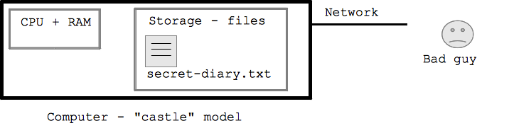
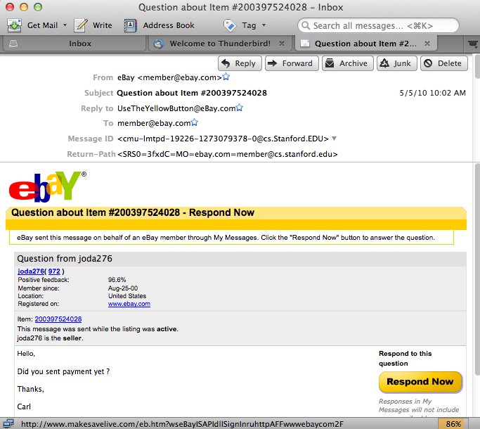

Skip to a navigable version of this video's transcript.
Skip to end of transcript.
Go back to start of transcript.
- So in this section, I'm going to talk about computer security. Now, computer
- security is kind of a scary sort of dramatic topic but it doesn't need to be. So I'm
- going to talk about some of the, the most important cases and in particular, you
- know, staying safe is not that hard, it doesn't need to be that complicated. So, for
- starters, I want to establish this model of the computer. I'll say the computer is
- sort of like a castle. So let's say here I've, I've
- drawn a computer and you know, there's this CPU and maybe here is a hard drive or
- flash drive or something with bytes on it that you care about and let's say you've
- got your secretdiary.txt. There's some bytes here that you, you care about. So,
- I'm going to say it's like a castle in that, the computer has the sort of, I've
- drawn this bold boarder around like it has a real wall and the bad guy's out here,
- he's outside the wall. Now, the movie is sometimes that, it seems like, well, the bad
- guy just drives up in advance, you know, outside your house and they have got some
- gadgets in and you know, they'll just do something and they just get the bytes off
- there. And that's just not how it works. By default, the bytes are on the computer.
- You've got the computer, the bad guy is on the outside like
- by default it's kind of safe - or to put it another way, when we look at the different
- things the bad guy might do, they all involve being outside and trying to get
- inside but by default, they're outside. So, what I want to do is talk about the
- different so called attacks, the bad guy might do. One sort of broad pattern I want
- to emphasize is that, it's not the case that there's a bad guy with the picture of
- you sitting in some apartment like scheming like how to get on to your
- computer. Generally the way it works is that the bad guys are working what you say
- in bulk. They don't know about you, they don't know about anything in particular. They're
- crafting not Fairly Medium complicated attacks. And then just sending out
- millions and millions of copies of that attack, not putting any thought into
- any particular one but j st trying to snag essentially victims who have taken
- the least precautions. So if you just do, - it's not that you need to have super
- awesome security - you just need to avoid making very common mistakes and if you
- just avoid the common mistakes, you're probably going to be okay. I should
- mention that sometimes for like corporate espionage or whatever you might
- get a government or someone who's trying very hard to break into someone's computer.
- That, that's sort of a different a different class of things. I'm not going
- to worry about that case. Presumably if you work in the CIA or something you've got
- your own class. So the first class of attack I'll talk about is password
- attacks. So the bad guy could try to just guess passwords to get into someone's
- account so you know Gmail, or so you know Gmail. Whatever, I'm sure this just
- happens all the time. This is sometimes called the dictionary attack - the idea being
- that the bad guy can just sort of you know
- enter "aardvark" or "acre", you know, just sort of
- like go through everywhere in the dictionary and just guess it. There is 86400 seconds
- in a day that kind of, it you would sort of
- guess the password of every few seconds. You know you can go through quite a few.
- The trick here to avoid password problems is you just need to avoid very obvious or
- very common passwords. So your password should never just be a word that appears
- in the dictionary or a pun or a little bit of
- work place that someone else that you know many other people on the Internet might
- have thought of. So actually I can showyou an example of a, this is sometimes called
- the dictionary attack (maybe I already said that). So
- actually this is a live, a real example of a dictionary attack. So I run the
- coding back.com server and. It turns out, bad guys are trying to break in to that
- thing like all the time. So, it has, it keeps a log file which have just
- what's happened. That's a standard thing for servers to do. I have here; I just put
- a copy of the log files. It's really cryptic but I'll walk you
- through it. So what this says is at On March sixth at 6:26:20 it says failed
- password invalid user Alex from some IP address. It's actually an IP address from
- Japan so what that's saying is there is a log in attempt and it failed for the user
- Alex and then two seconds later there is another one and then when is it, four
- seconds after that there is another one is Alex three times and then there are those
- for failed one for Adam and for user Fax or whatever and so. This kind of shows you
- the sort of bulk quality so there's just some bad guy machine out there and you can
- see every two or three seconds it's just trying another password and. It's just
- always wrong. It's just guessing what are the odds that's going to happen but that
- match very, very low but that's how the bad guys operate. It's not that they have
- a high percentage idea. It's quite the opposite. They have this very low
- percentage idea and then they just try it a very large number of times. So it's also
- I think fine that you can see they have some sort of a list of user names to try
- and it's kind of alphabetical right like they are just, it's just gullible, they're
- just going through so they're just going through so they're just kind of I guess
- not to be too scared but that's just going on all the time, right. The bad guys are
- just trying every server they can find every couple of seconds whatever just like
- constantly so I'll talk about in a second if you just have a password that's a
- little bit hard to guess. They're, they're only the guessing the most obvious kind of
- password for that sort of attack. So here's a It was interesting, I just looked
- up a list of just common passwords so here's. I'm sure it depends on how the
- surveys is down but here is some password so the number one common password was the
- word password. Number two was password one. No doubt that's when they require you
- to put a number on there and some of you out there might actually do that. I know
- some of you out there may have actually done that. Here's someone as password as
- one through nine or one through eight or ABC123. It's not a word but it's kind of a
- pattern. It's pretty easy to match it to a lot of people trying that password Or
- QWERTY. Another example is almost trying to be clever. But if you're clever in the
- way that like a million other people are going to have the same idea, that is not
- clever. So those are all password patterns to avoid like you can't pick something so
- obvious that other people might try it. So, the good news is that having strict
- password is not really that hard and some in sites in my opinion really go overboard
- requiring to have a bunch of digits and multiple punctuation. I think, I think
- they're fooling themselves. I think that is excessive so I'll give you some
- examples on what my opinion represents good password. And I should say, I use
- good passwords for, the bad guys are really interested in sites that involve
- money. So banks, eBay, PayPal or your e-mail account. Your e-mail account is
- important because the bad guys can then trigger a password reset which is then
- sent to your e-mail account and then there might be some other repairs there but
- that's maybe a way for them to get to the account with money. So, those passwords
- are regardless important and then there might be some other, you know, blog were
- you want to come in or whatever and I don't put a lot of thought of using a real
- secured password for that so I'm conscious of passwords where I care about security
- versus kind of, you know, whatever throw away passwords. So here's what I'll do.
- Start with the word, here I use the example of mittens just some random word
- and I add a little misspelling. Change the letter, mess it up a little bit so it's
- unclear right? And then here I edit, ERX just a little random something in the
- middle beginning and the end or something so it's no longer, it's really not a word
- anymore. That's pretty good. It's important here that the ERX is only like
- ABC or XYZ or something that anyone else would have thought if is just really
- random and jumbled a few letters. So, this kind of password I found to be pret ty
- easy to type. If you want to get a little more fancy you can start adding some
- uppercase letter and maybe out a digit in there, a lot of sites required digits Or
- if you want to go really over the top, we can have like multiple uppercase letter
- and lower case and multiple digits and function letters. That's probably more
- complicated than as I say. So, those are pretty good passwords. There's another
- problem which is, instead of the bad guy guessing the password it might be that the
- bad guy let's say they break, I'm going to use schwab.com as my example. So what if
- they break in to schwab.com and they sort of get all the passwords from inside of
- there and there are some technical details about how might that work, It's important
- that for that reason it is important that you do not reuse important passwords.
- There is you know, if, if you did reuse it then there's this other problem even if
- it's hard to guess where it could kind of still enough from you but essentially from
- someone else. So I don't really use important passwords. This does create a
- problem with that is really hard to remember and I guess what I'll do is I'll
- just write them down. Like you have a piece of paper somewhere, you know,
- somewhere obscuring your house and for the important ones just write them down I find
- to be adequate. And to realize again, it's not that there's, there's some bunch of
- you know, the CIA or something is trying to break in your account and hiring people
- to break in your house to get the passwords. It's more, there's just this
- mindless bulk - and in a way just very inexpensive -
- operation going on just trying to take advantage of common cases so I'm not so
- worried about having those written down. Also if you were in the hospital or something,
- it might be helpful to [INAUDIBLE] to other people
- so that they could, they could get your
- password. Alright. So that's our, that's our different password, password problems.
Computer Security
Computer security is a big and kind of dramatic area, and it can look scary. I'll talk about the most important and interesting ideas. Keeping safe is not that hard.
Computer -- The Castle

Computer Attacks
Below we'll tour through the three most common type of attack in broad categories: 1. Password attack, 2. Phishing attack, 3. Malware attack - here I'm using the terminology very broadly.
Bad Guy Attacks - Bulk
Although I'll talk about problems most of the time, don't get all scared. I use the internet all day long, I don't have any anti-virus software installed, and I have not had any problems. It probably helps that I don't use any Microsoft software, which is a popular target.
-1- Password Attacks
The bad guy could try to just guess your password, attempting to log in again and again, hoping to get lucky. They might know the username and just guess the password, or more likely they are guessing both. There are 86400 seconds in a day, and suppose your bank permits 1 login attempt per second. The bad guy could just go through the list of 100000 common passwords ("password", "password123", "janexyz", ...) trying to get lucky. This works, since they only need to guess correctly for a few accounts, and they can do the attack in bulk.
Clearly, the bank or whatever should detect thousands of bad logins and slow down or freeze the account. This can cause problems for the legitimate user however, so it's a balance. One simple policy is that the Bank can process login attempts at a slowish rate, such one every second to prevent the bad guys from trying 100 billion different passwords.
Dictionary Attack Example
Here's a real "log file" from my codingbat.com server where it routinely records what happens each day. What you see here is the attacker is trying guess both the username and password on the account. It happens that the username for each attempt is printed in the log file but the password is not. No doubt they are trying common passwords, such as "secret" "password12" etc. It's funny to me that you can see that their list of usernames to try is sort of alphabetical order, and they are just running through it in the most obvious way. So what you need to understand is .. this sort of attack is clicking along, every second of every day aimed at basically all the servers on the internet. They just need to succeed with a few accounts here and there, even though they fail 99.99% of the time. This is why you should not have a password which is close to a dictionary word or someone's name, or is a password people often choose. The good news is .. with just 4 random letters added to your password .. suddenly this dictionary attack is not going to work -- there's not enough seconds in the day. Note that 49.212.7.205 is the IP address of the machine attacking codingbat.com. It appears to be in Japan -- it's probably some person's Windows XP machine that has been compromised and is now used as a "zombie" under the control of the bad guy to launch more attacks. The zombie is probably running attacks at many servers all at the same time, but here we just see the ones directed at codingbat, about one login attempt every 3 seconds.
... Mar 6 06:26:20 codingbat sshd[30924]: Failed password for invalid user alex from 49.212.7.205 port 36268 ssh2 Mar 6 06:26:22 codingbat sshd[30926]: Failed password for invalid user alex from 49.212.7.205 port 36605 ssh2 Mar 6 06:26:26 codingbat sshd[30928]: Failed password for invalid user alex from 49.212.7.205 port 36937 ssh2 Mar 6 06:26:29 codingbat sshd[30930]: Failed password for invalid user adam from 49.212.7.205 port 37212 ssh2 Mar 6 06:26:32 codingbat sshd[30932]: Failed password for invalid user fax from 49.212.7.205 port 37546 ssh2 Mar 6 06:26:34 codingbat sshd[30934]: Failed password for invalid user fax from 49.212.7.205 port 37864 ssh2 Mar 6 06:26:38 codingbat sshd[30936]: Failed password for invalid user demo from 49.212.7.205 port 38201 ssh2 Mar 6 06:26:41 codingbat sshd[30938]: Failed password for invalid user demo from 49.212.7.205 port 38561 ssh2 Mar 6 06:26:44 codingbat sshd[30940]: Failed password for invalid user amanda from 49.212.7.205 port 38911 ssh2 Mar 6 06:26:47 codingbat sshd[30942]: Failed password for invalid user angie from 49.212.7.205 port 39244 ssh2 Mar 6 06:26:51 codingbat sshd[30944]: Failed password for invalid user angie from 49.212.7.205 port 39552 ssh2 ...
Bad Passwords
Good Passwords
You do not need a super elaborate password, but you don't want it to be susceptible to a dictionary attack either. My suggestions:
- The list of common passwords contains passwords that are just a word or a word plus a tiny variation, like "jane" or "secret1" or "mittens123", or two words like "catmittens", so it's vital that your password does not look like that.
- It's ok to have a word fragment, but it should also include significant nonsense letters. Personally, I like starting with a word, since it is easy to remember and fast to type, but then random junk needs to be added in and around it.
- Some sites go crazy, requiring many upper case letters, and digits, and punctuation letters. I think that's not necessary. It's "security theater": adding more complexity and the appearance of action but without actually adding to security.
For an important site like a bank, you should use a password different from your other passwords. It should not be the case that by stealing your facebook or twitter password, they now have access to your bank. I write the passwords down on a piece of paper at my house in case I forget. The bad guy in Russia or whatever does not have some team of ninjas that's going to break into my house and get passwords off my slip of paper. The attacks are bulk, mindless affairs that work on the low-hanging fruit. One technique for writing down passwords is to pick a little suffix you memorize, like "x936" or whatever, and that always goes on the end of your passwords. Write the passwords down, but never the suffix. That way, even with the piece of paper, a bad guy still does not have the passwords. Or maybe its better to just write the passwords out clearly, so your family can access your email etc. if you are in the hospital.
Email is tricky -- once they have your email password, then they may be able to do a password reset and get into your account. In that sense, your email password is the most important.
-2- Phishing Attacks

Probably the most common form of attack. The email is forged to appear from someone you might trust -- including logos etc -- I have gotten ones which I personally found quite convincing. I had to slow down and really pay attention to realize that it was a phishing attempt. It does not help that ATT, Schwab, Citigroup, etc. do in fact send you email all the time about your accounts.
Here is an example ebay phishing email sent to me. The arrow (not shown) is over the first blue link, so its url appears at the bottom of the message. Note that the url is not an ebay url, it's some bad guy url which will attempt to fool us into typing in our username/password. Note that there is no actual sale or anything that prompted this message -- the bad guys just spew out millions of these emails, in the hopes that one make sense to someone.
The most obvious valuable information the bad guy can get from you is a password to a bank account or some other account that contains something valuable. However as a simplification, if the bad guy can get the password to your email address, then they may be able to get access to most things by clicking the "I forgot my password" button on your bank site. So your email password is very important.
Fake ATM Machine -- Real World Analogy
Criminals put up a fake ATM machine made of plywood in front of a real ATM, with a "under construction" sign. The victim would put their card into the fake ATM and type in their PIN. Then the machine would print an "out of order" message and give the card back. The bad guys in this way collected all the card numbers and PINs and drained the accounts over the weekend. This is a nice real-world analog of fake-site phishing.
Avoiding Phishing
HTTPS
HTTPS is the "secure" http variant, https://www.ebay.com/. In particular, the server must hold a certificate which is verified beforehand by an authority that the server really represents www.ebay.com or whatever. You have to pay money and file some paperwork to get an https certificate -- hard for a bad guy to do, although not impossible. The idea with https is that the user can see the identity of who they are talking to. In the browser interface, https is typically accompanied by a little lock icon, and some banks etc. mention to their users to look for the lock. Having users pay attention 100% of the time is not a perfect security solution, but it helps.
Encryption vs. Bad Guy Packet Eavesdropping
When you go on to wifi and visit a web page and type something in ... the packets for all that are just being broadcast in the room, so anyone nearby can observe the packets, listening in (recall the ethernet-packet-broadcast material from the networking section). For the most part, this is harmless. In some cases, say when you are typing in a credit card number, you want the communication to be encrypted (encoded), so that someone listening in cannot read it. The https scheme above also does encryption, so you will notice that when you go the page to type in a credit card number, the url begins with "https://". On such page, all the packets are encrypted, so someone can listen and see the packets, but they will appear to be random garbage. The eavesdropper cannot unscramble the packets to see what's inside, or forge a packet. So Https blends two security provisions -- (a) verifying that it really is the www.mybank.com or whatever server on the other end and (b) encrypting all the packets of the communication.
-3- Malware Attacks
This is a big category, where the bad guy tricks the victim into running bad software ("malware") on the victims computer. I'm lumping viruses, worms, and trojans all into this category.
How Do I Feel About This File?
Passive Content = Safe, Program = Unsafe
The last, .exe case is the main risk here, although all of the above scenarios could result in problems. If code written by the bad guy, a .exe, runs on your computer, the bad guy now in essence has control and access to the data on your computer.
Suppose the bad guy is sitting at the keyboard of your unlocked computer, obviously they can do whatever they want with your data. The .exe case is very similar -- the code in the .exe could do what the bad guy wants -- look for a particular file, email it off the machine, etc. Most of the "attacks" listed below in essence try to re-create the .exe case, and the defenses center on preventing the .exe case.
"Malware" is the general term for a program written by the bad guy to do bad things to your machine - break in to the machine, steal passwords, send spam, etc.
Bad Guy Malware .EXE Techniques
Malware 1 - Trojan
A "trojan" is a malware disguised as something else, like "awesome-cursors.exe" or "fun-game.exe" or "JustinBeiber.JPEG.exe" (Windows is vulnerable to extensions other than .exe, it's just used for the examples here). The term refers to the Trojan Horse story from antiquity. If the user can be tricked into double clicking the trojan, running it, then the bad guys have won. The https is no defense. On Mac OS X, heuristics have been added where it puts up a dialog "This was just downloaded and it is a program; are you sure you want to run it?"
Malware 2 - Vulnerability
Suppose there is an engineering flaw in Firefox or the Flash player or some other software on your machine, such that if it sees a particular sequence of bytes as input, there is bug that allows a takeover of the machine. This is called a "vulnerability", and it is one of the scary cases. If the user browses over to a web site this is hosting the "attack" content and their browser is vulnerable, then the bad guy can get it just from that. The bad guy can make the web site appear attractive, post links on reddit or whatever to try to drive traffic to the site. This attack is scary because it does not require the user to do anything especially foolish.
Such vulnerabilities in Flash and IE used to be quite common. However, the engineering culture seems to be catching up, and this case is becoming more rare. The most important step is being sure to run the most up to date, current version of your browser and any plugins such as Flash. Firefox et al have switched to make programs auto-check for new versions, so the user does not need to do much to have the most recent version. Often a vulnerability is fixed, and months later attackers start using it on sites, but they can still succeed with users using old versions.
Safety Recap
Let's stay safe out there!